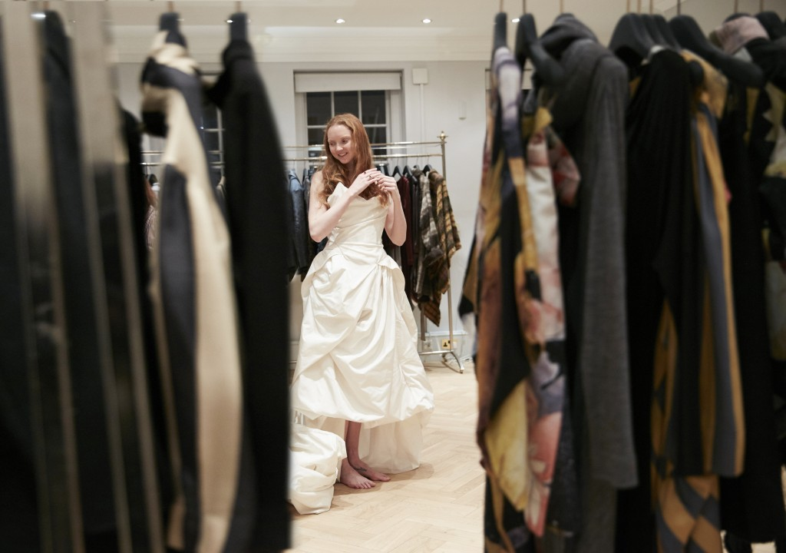
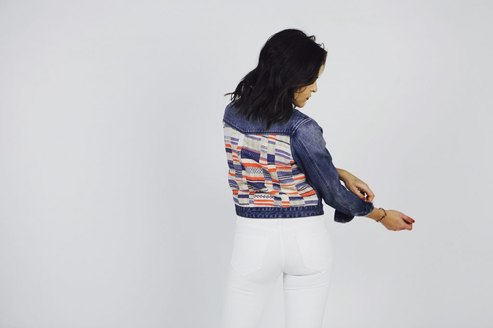

Organizations
Sustainable Designers
There are some organizations working to increase opportunities for sustainable designers and increase the visibility of the movement. The National Association of Sustainable Fashion Designers is one of those organizations. The organization's mission is to create social change through design and fashion related businesses by providing education, training and programs that are transformative to the industry and to cultivate collaboration, sustainability and economic growth.
red carpet green dress
Red Carpet Green Dress, founded by Suzy Amis Cameron, is a global initiative showcasing sustainable fashion on the red carpet at the Oscars. Talent supporting the project includes Naomie Harris, Missi Pyle, Kellan Lutz and Olga Kurylenko. Undress Brisbane is an Australian fashion show that sheds light on sustainable designers in Australia.

fashion takes action
Fashion Takes Action formed in 2007 and received a non-profit status in 2011. It is an organization that promotes social justice, fair trade and sustainable clothing production as well as advances sustainability in the fashion system through education, awareness and collaboration. FTA promotes sustainable fashion via social media, PR, hosting fashion shows, public talks, school lectures and conferences.

the ethical fashion initiative
The Ethical Fashion Initiative, a flagship programme of the International Trade Centre, a joint agency of the United Nations Conference on Trade and Development (UNCTAD) and World Trade Organization, enables artisans living in urban and rural poverty to connect with the global fashion chain. The Initiative also works with the rising generation of fashion talent from Africa, encouraging the forging sustainabfdle and fulfilling creative collaborations with artisans on the continent. The Ethical Fashion Initiative is headed by Simone Cipriani.